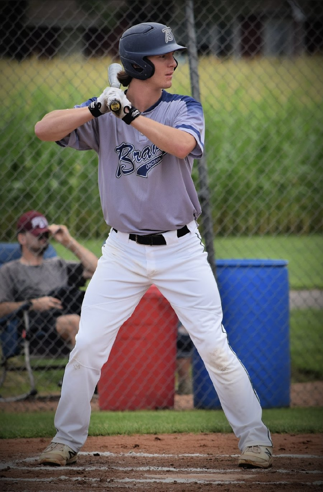
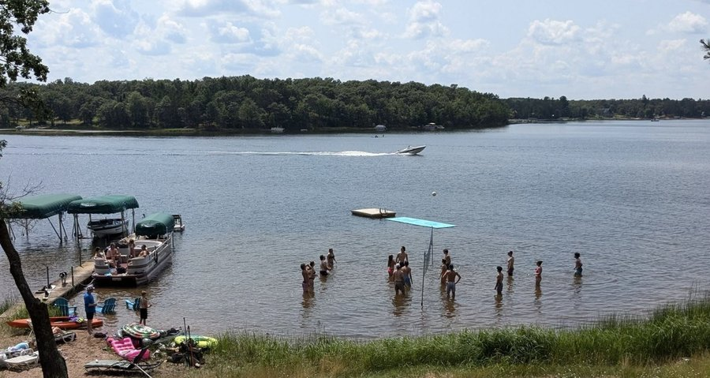
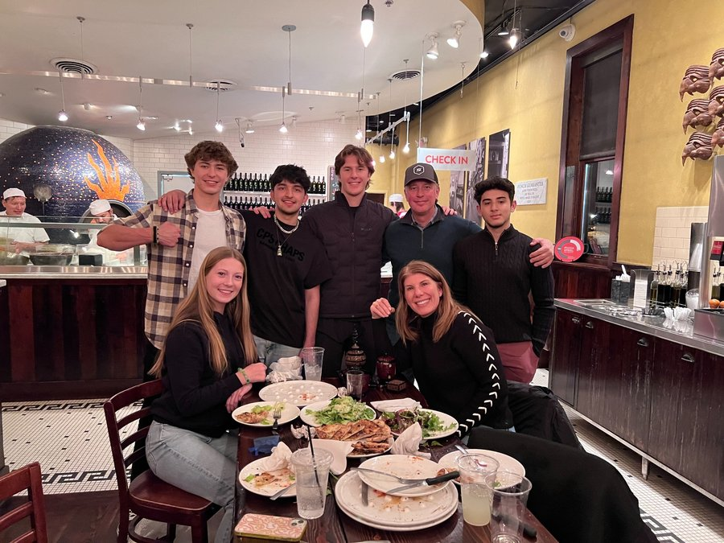
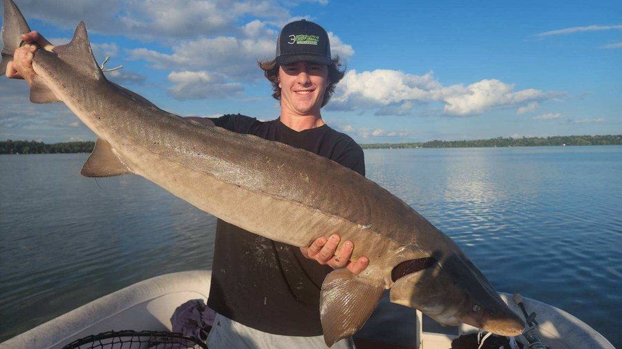
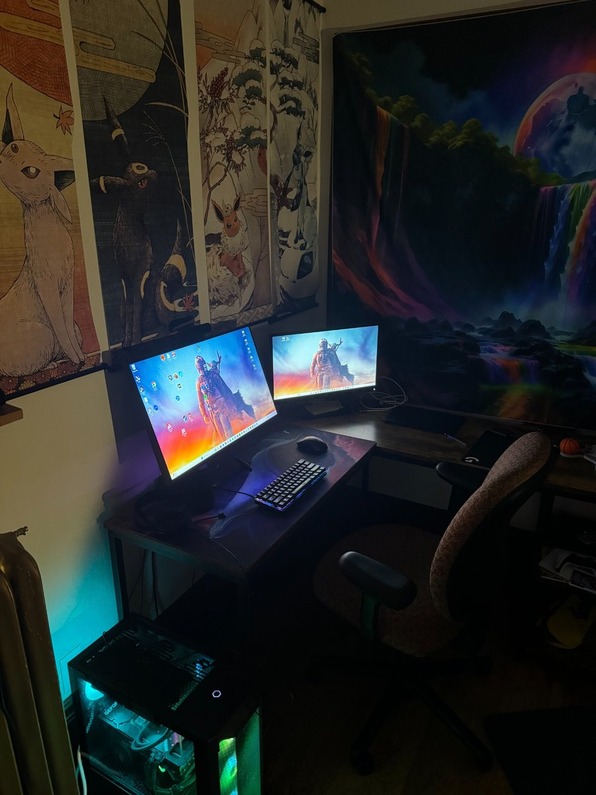
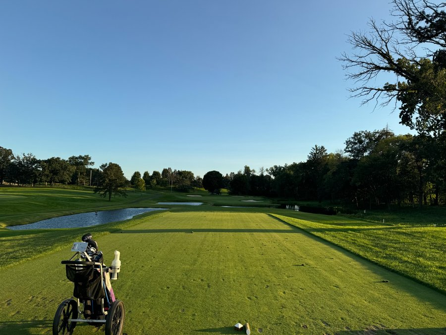

Fun Stuff
A peek at the things I enjoy outside of school and work.

Baseball — Played all through high school; now I play town ball with lots of returning college players.

Cabin Days — Been going up there since before I can remember. Watersports, volleyball, games—and the best sleep.
 Dogs — Always been a dog person — nothing better than time with them.
Dogs — Always been a dog person — nothing better than time with them.

Family — My family (minus my two older brothers and our two adopted Myanmar boys) at a family dinner.

Fishing — Biggest freshwater catch so far: a 62-inch, ~40 lb sturgeon.

Gaming — Huge gamer. Grew up building & selling PCs and made good money from it.

Golf — Started after high school graduation; fell in love with it after freshman year.
 Hiking — I like getting outdoors, exploring trails, and finding quiet spots to reset.
Hiking — I like getting outdoors, exploring trails, and finding quiet spots to reset.